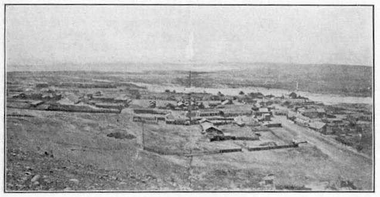
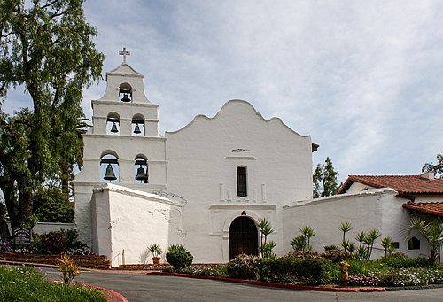
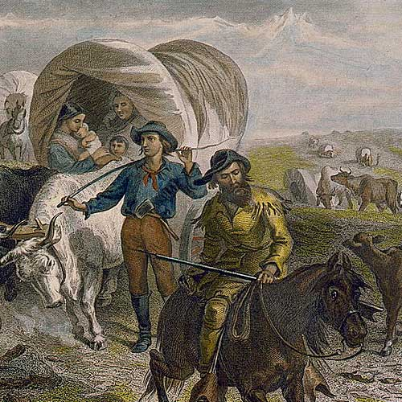
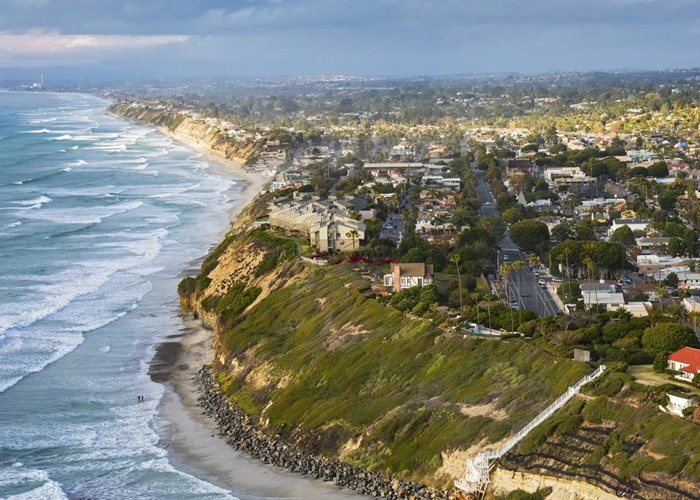
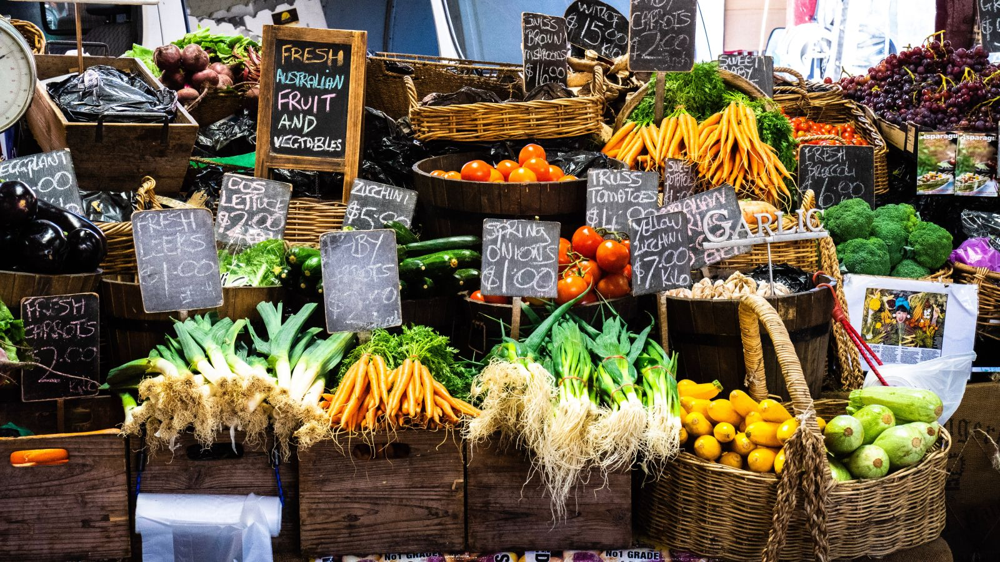
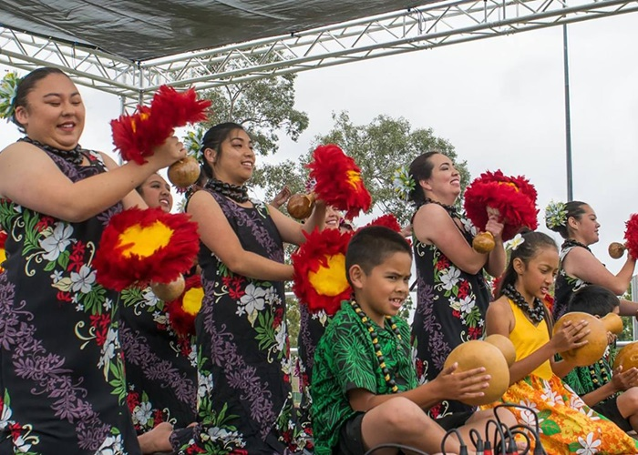
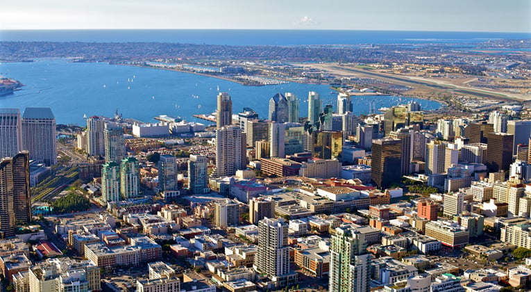

EARLY SETTLEMENTS
A depiction of the first settlers arriving in the San Diego area.
The Kumeyaay people were the original inhabitants of what is now San Diego. Spanish explorers arrived in the 16th century, establishing missions and presidios that marked the beginning of European settlement.
MISSIONS
Mission San Diego de Alcalá - the first of California's missions.
Founded in 1769 by Father Junípero Serra, this mission was the first of 21 established across California. It played a key role in Spain's colonization efforts and remains a historic landmark.
SIGNIFICANT FIGURES
Leaders, visionaries, and changemakers from San Diego's past.
San Diego's history includes figures like Father Serra, Alonzo Horton (founder of modern San Diego), and Ellen Browning Scripps, a philanthropist whose legacy lives on in education and science.
MILITARY
San Diego's naval roots run deep.
San Diego became a major military hub in the 20th century, hosting several Navy and Marine Corps bases. Its role during WWII and the Cold War shaped the city’s economy and identity.
MEXICAN-AMERICAN PERIOD
San Diego as part of Mexico before U.S. annexation.
After gaining independence from Spain, Mexico governed San Diego from 1821 to 1848. The city’s identity was shaped by a mix of Spanish, indigenous, and Mexican cultures during this time.
NATURE
Beaches, deserts, mountains – San Diego has it all.
The region's unique geography has influenced settlement, culture, and tourism. From coastal bluffs to chaparral canyons, San Diego’s land has always played a central role in its story.
FOOD & AGRICULTURE
Fresh produce and rich culinary traditions.
From early ranchos to today’s farmers markets and fish tacos, food has been a constant thread in San Diego’s story. Agriculture and seafood shaped both its economy and cuisine.
CULTURAL DIVERSITY
A blend of cultures that shaped San Diego’s identity.
San Diego is a melting pot of Latino, Filipino, African American, Asian, and Native cultures. Its neighborhoods, festivals, and public art reflect this vibrant multicultural heritage.
DOWNTOWN
The transformation from frontier town to urban hub.
Downtown San Diego grew rapidly after the arrival of the railroad. Alonzo Horton’s vision of a modern city led to the rise of the Gaslamp Quarter and the thriving business district seen today.